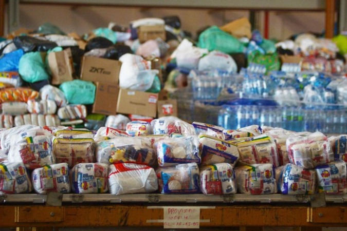
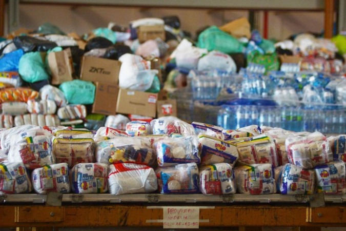

Porque o Brasil?
Focamos em três causas essenciais: educação, apoio a pessoas em situação de vulnerabilidade e assistência em desastres ambientais.
Acreditamos que investir na educação é transformar o futuro, que a solidariedade pode mudar vidas e que agir rapidamente em emergências pode salvar comunidades inteiras.
Ao concentrar as doações no Brasil, garantimos que os recursos cheguem diretamente a quem precisa, com transparência e impacto real. Juntos, podemos fazer a diferença!
educação
educação é a chave para um futuro melhor.
Doar para a educação significa investir no conhecimento,
no desenvolvimento pessoal e no crescimento de comunidades inteiras.
Com seu apoio, podemos proporcionar materiais escolares, acesso a tecnologia,
infraestrutura adequada e oportunidades de aprendizado para crianças e jovens que
enfrentam dificuldades.
Pessoas Carentes
Doar é um ato de solidariedade que faz toda a diferença na vida de quem mais precisa.
Essas doações ajudam pessoas carentes a terem acesso a alimentos, roupas, moradia,
atendimento médico e educação.
Para muitos, isso significa a chance de se reerguer,
encontrar novas oportunidades e viver com mais dignidade.
Cada contribuição leva esperança e transforma realidades!
Desastre ambiental
As doações são essenciais em desastres ambientais,
pois garantem alimentos, água, abrigo e cuidados médicos para os afetados.
Além do suporte imediato, ajudam na reconstrução de casas e infraestrutura,
permitindo que as comunidades se reergam mais rapidamente.
Contribuir é um ato de solidariedade que salva vidas e promove esperança.
Como mudamos vidas?
Criamos um modelo de ajuda onde proporciona agilidade e flexibilidade, por via do nosso site voçê pode contribuir conosco
 
